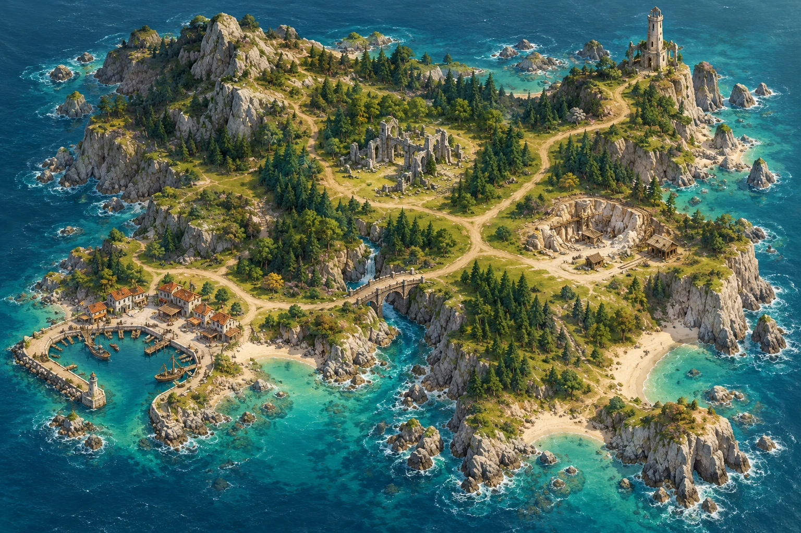

BEACON SQUAD · THE HOMEWARD LIGHT
长夜归航 灯塔小队
带一支队伍出海，
把光和他们一起带回来。

栖灯群岛 / 海岸踏查32天内重燃灯塔并归港
THE SEA CAN WAIT
航程已暂停
当前进度已保留。
CAPTAIN'S LOG / 最新航海记录
BEACON SQUAD · THE HOMEWARD LIGHT
带一支队伍出海，
把光和他们一起带回来。

THE SEA CAN WAIT
当前进度已保留。
CAPTAIN'S LOG / 最新航海记录